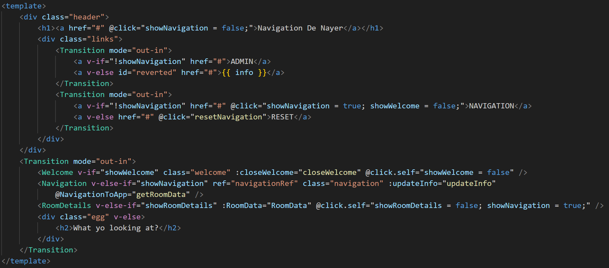

Practice Enterprise
Hi, on this page you'll find information about my Practice Enterprise project!
DETAILS
My project is a website containing different self-made maps of Campus De Nayer. The user can easily navigate between each map to see different locations of Campus De Nayer. When the user wants to, he can simply click on any location, i.e.: a classroom, to show all of its available data. You can find on the left a video demonstrating the working of my website.
This website was made using the MEVN stack: MongoDB, Express.JS & Node.JS as back-end and Vue.JS as Front-end JavaScript framework. For a further look inside the main working of my website see "Software" section.
SOFTWARE
As said previously, the front-end JavaScript framework I used was Vue.JS. Let's dive a bit deeper on what it is and how I used it for my usecase.

Vue.js is a progressive JavaScript framework for building user interfaces. It’s lightweight, easy to integrate, and focuses on the view layer, making it ideal for single-page applications and component-based development.
With Vue.js we can dynamically change the content of a HTML-document, without the need of having multiple HTLM-files. All HTML, CSS and JavaScript code is written inside a ".vue" file which can then get called and used inside an HTML-file. This approach is simple yet effective for building websites.
How did I use Vue.js inside our project?
When I first started developping the website, I didn't put much effort at using Vue to its fullest potential. I saw my errors and then decided to remake our entire code using all the tools Vue could offer. Here's an example that shows one of the advantages of Vue:
Remember the video from earlier? The transitions and the switching between parts of my website all happened inside one page. You know what's better? That same main page only contains 170 lines of code INCLUDING JavaScript and CSS. How did I achieve that? Using Vue components. On the right is an image containing all of my HTML-code for the "index" page of my website. Using Vue I was able to do something that would've required lots and lots of different files using plain HTML, CSS and JavaScript. How does it work? Using a "Transition" tag which is built-in with Vue, I was able to easily make transitions between each of my components. Each components gets its own tag which I previously (in my code) defined. Each component gets its own file, style, JavaScript code.... Using another built-in function called "v-if" I was able to easily choose which components gets displayed to the user when he clicks on a button inside the header. Inside each tag I can put all sorts of things like built-in logic (v-if, v-else...), I can even pass variables and functions to each components....
Another magic of Vue was its ease-of-use and low learning-curve. Even tho I NEVER had used JavaScript or any JavaScript framework in the past, I was able to easily make a decent looking website.